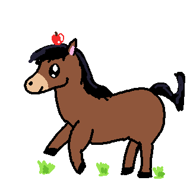

☋ Horses as Pets ☋

Pros
- Outdoor animal that can help you be more active
- Each horse has a unique personality
- Can ride them, proving a unique experience
- Owning a horse provides mental exercise and reduces stress
Cons
- Large animal and needs a large open space to roam
- Health issues like ringworm, sore backs, and teeth problems
- Big time commitment, including grooming and exercising
- Need to provide food in measured intervals twice a day
Owning a horse can be quite difficult since they need you to have open land where they can roam and graze.
However, owning one provides a very special experience such as riding and exploring their unique personalities.
For people who live on a large plot of land or farms and enjoy the outdoors, a horse is a perfect choice.
Go Back